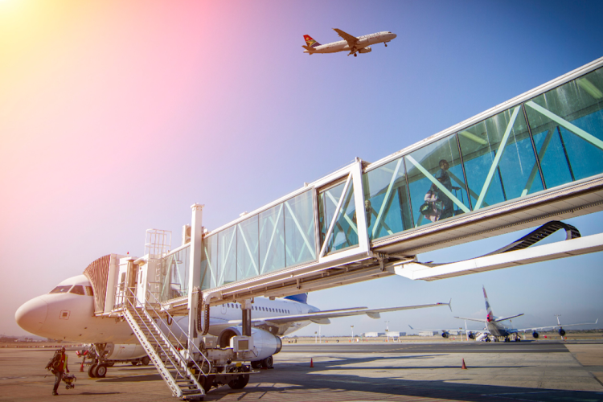
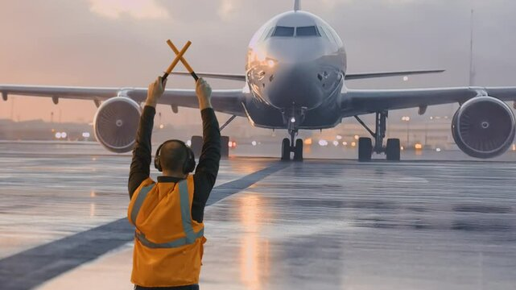
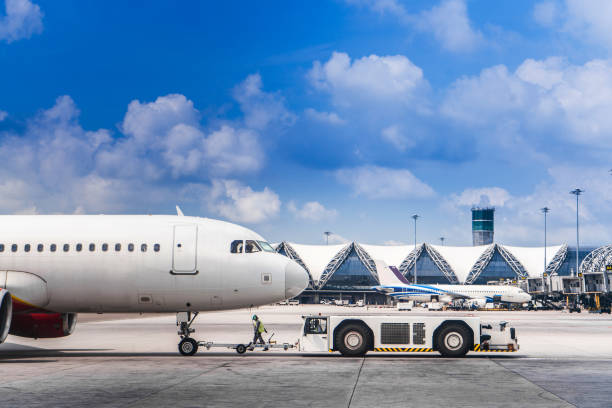
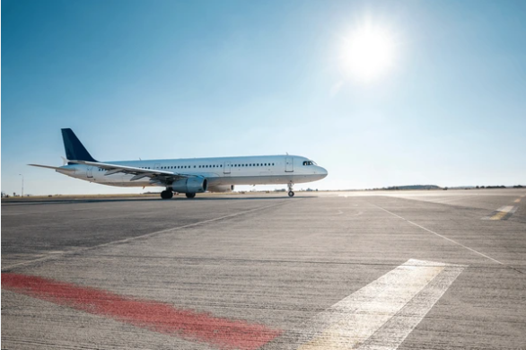
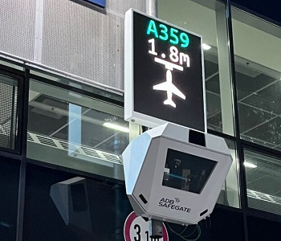
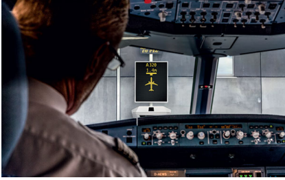
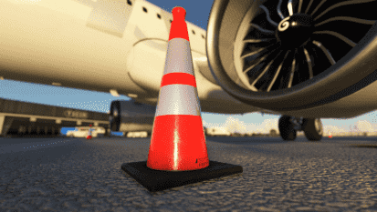
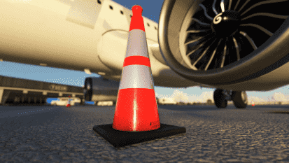

Trainee: Sir, why is the ramp safety traiing considered important?
Instructor: The ramp is like a busy street—planes, trucks, baggage carts, and people, all moving around. It’s a fast-paced area, so staying aware is key to staying safe.
Trainee: Got it! How do I make sure I stay safe?
Instructor: It’s simple—stay alert, follow the rules, and wear your Personal Protective Equipment (PPE). They are your best friend here—make them your second skin.
Trainee: PPE!! What's that?
Instructor: Before you enter airside, you need to ensure you have the following PPE Kit with you. It contains Ramp Jacket, Safety Shoes and earplugs. Our Agile staff carry Safety gloves too as they are handle baggage loading and offloading from aircarft or trolleys
Trainee: What’s the biggest mistake people make?
Instructor: Not being aware of their surroundings. It’s like walking in a crowded market—if you’re not looking, you might bump into something. Keep your head up.
Trainee: And if something feels off?
Instructor: Don’t hesitate to speak up. A quick check is always better than letting something slide.
Instructor: By the way, do you know the full form of RAMP?
Trainee: No, I don’t. What is it?
Instructor: It stands for "Region of Aircraft Movement and Parking." It’s the area where aircraft are parked, moved, and serviced. Think of it as the zone where all ground operations take place—fueling, loading, maintenance, and more.
Trainee: Sir, what’s the difference between Airside and Landside?
Instructor: Think of Airside as the wild west—planes, ground crew, and equipment are all zipping around at full speed. Landside? More like the calm before the storm. It’s where passengers, check-in, and security happen—much slower and less hectic.
Trainee: So, Airside is the "action-packed" side?
Instructor: Exactly! It’s where the adrenaline is. You’re dealing with aircraft, refueling, baggage loading—basically, everything that makes a aircraft ready to take off. It's all fast, intense, and needs precision.
Trainee: Sounds like it’s easy to get overwhelmed. How do I stay on top of it?
Instructor: Stay cool, calm, and collected. Airside is all about planning ahead, sticking to procedures, and communicating like a pro. And don’t forget your PPE! It’s your armor in the chaos!
Trainee: Got it. So, Landside is more about the people?
Instructor: Yep! It’s where you’ll see customers checking in, grabbing their bags, and boarding. The pace is slower, but you still need to stay alert, especially when it comes to security and crowd management.
Trainee: Sounds like I need to be ready for both sides, huh?
Instructor: You bet! Whether you’re on the ramp or in the terminal, it’s all about safety, communication, and keeping things running smoothly. Just remember, one side’s full of planes, the other full of people. Both need attention!

Trainee: Sir, what’s the difference between airside and landside access? Why are the restrictions so strict?
Instructor: Great question! Landside is where customers hang out with their tickets, no big deal. Airside? That’s VIP. Restricted access—you need an AEP to get in.
Trainee: AEP? What's that?
Instructor: AEP stands for Aerodrome Entry Permit. It's your key to airside access. Without it, you're stuck at the door!
Trainee: So, I need the AEP to work airside?
Instructor: Yep, and it must be visible at all times. It’s your backstage pass to the restricted zone!
Trainee: Got it! I’ll never forget it!
Instructor: Good plan! Keep it on you and follow the rules. Safety first!
Trainee: Thanks, Sir! I’ll wear it like a badge of honor!Instructor: That’s the attitude! Welcome to the airside club! 😎
Trainee: So I need an AEP to work airside, right? What happens if I forget it?
Instructor: Forgetting your AEP? That’s like trying to enter a concert without a ticket. Not gonna happen! If you forget it, you’ll be stuck at the door, and no one likes being left out of the action. Always keep it with you and wear it proudly—it’s your backstage pass!
Trainee: Got it! So, as long as I have my valid AEP, I’m good to go?
Instructor: Yep, just remember—airside is a high-security zone. Always remember to wear a valid AEP and not an expired one. If you’re not authorized, you can’t work there. Keep your AEP visible at all times. Think of it like your "I belong here" badge!
Trainee: Perfect! I’ll treat it like gold. No way I’m forgetting that!
Instructor: Exactly! It's your key to the kingdom. Now go on, show off that AEP with pride!
Trainee: Can you show me how PPE looks like?
Instructor: Most Certainly.
Being safe means being seen and protected! Always wear:
- Ramp Safety Jacket, Ramp Safety Shoe
- Ear plug, Safety gloves
- Cap, Face Sheild
- Rainwear and Rain Boots

Trainee: Thankyou. When will I get this?
Instructor: You will recieve all of this from unifrom department atleast 2 days prior to Airside visit.
Trainee: What if I don't get?
Instructor: You need to inform your batch instructor atleast 48 hours prior so that he/she can arrange the same for you. Remember, if something feels off,don’t hesitate to speak up. A quick check is always better than letting something slide.
Trainee: What are the Do’s and Don’ts at airside?
Instructor: At present, being a trainne, focus on the following.
Do:
- Use hand signals when needed.
- Be alert to aircraft and equipment movement.
- Report hazards or unsafe behavior immediately.
Don’t ❌
- Walk under A/C (A/C means aircraft) wings when A/C engine is switched on or aerobridges.
- Walk under aerobridges when it is in motion.
- Use your phone while walking at airside.
- Ignore PPE or zone markings.
Instructor:You’ll undergo 10 days of airside On-the-Job Training (OJT). Afterward, we can review and discuss what you’ve learned.
Trainee: Sir, what’s with all the different colors on the ramp? Is it like a traffic light for airplanes?
Instructor: Haha, not exactly! But the colors are there to guide you, just like traffic signals. Each color has its own meaning—red, yellow, white, you name it. It’s all about keeping things safe and organized.
Trainee: Okay, but what does each color mean? I’m guessing red means “stop!”
Instructor: You’re right about red! For example, the Equipment Restraint Area (ERA) is marked in red. It’s like a “no-go” zone for equipment. Then we have the TCL (Tail Clearance Line), also red—basically saying, “Don’t park your equipments or vehicle here!”
Trainee: Got it, red is off-limits! What about the white lines?
Instructor: White lines are usually on the service roads, and they come with a speed limit of 15 km/h. Slow and steady wins the race—remember, safety first!
Trainee: So, no speeding on the ramp, huh? What about the perimeter wall? Is there a speed limit there too?
Instructor: Yes! The perimeter wall has a speed limit of 30 km/h. You can go a little faster, but still, no Formula 1 here!
Trainee: Alright, what’s this yellow line thing I keep seeing? Is it a shortcut to the plane?
Instructor: Haha, not quite! The yellow line marks the center line and stop points. When you're moving equipment or planes, you stop at the yellow lines and make sure everything’s lined up properly.
Trainee: So, the yellow lines are like a ‘pause button’ for the ramp, got it! What’s the deal with the no parking zone under the aerobridge?
Instructor: Ah, that one’s simple. It’s a red no-parking, no-standing zone. Basically, don't park or stop your equipment there, or you’ll be in hot water!
Trainee: Too much information. Can you give me the data in a tabular column for me to refer and study?
Instructor: Sure, here you go:
| Color | Area/Description |
|---|---|
| Red | Equipment Restraint Area (ERA), Tail Clearance Line (TCL), No Parking / No Standing Zone (under Aerobridge) |
| White | Service Road (general road markings) |
| Yellow | Center Line, Stop Point, Taxiway Lines (for aircraft) |
| Black and White Stripes | Restricted/Hazardous Zones (e.g., fuel stations, maintenance areas) |
| Area/Description | Speed Limit |
|---|---|
| Service Roads | 15 km/h |
| Perimeter Wall | 30 km/h |
| Inside Safety Diamond | 5 km/h |
| Under Aerobridge (No Parking Zone) | 0 km/h (No Parking) |
Trainee: Alright, no parking near the aerobridge, yellow lines mean stop, and red means stay out. I think I’m getting the hang of this!
Instructor: You’re on track! Just remember, ramp safety is all about knowing the rules and respecting the colors. Follow them, and you’ll be flying smoothly in no time!

Trainee: Sir, what’s all this equipment for? It feels like a lot going on!
Instructor: Welcome to the world of airside! Each piece does its job.
- BFL
- TUG
- Passenger Coach
- Passenger Ramp
- Trussel
- Trolley APU
- GPU
- Water Cart
- Toilet Cart
Trainee: WOW !! Can you explain a bit more about each equipments and vehicles.
Instructor:For example, the BFL—Baggage Freight Loader—moves luggage and cargo onto planes. Without it, you'd be carrying bags by hand!
Trainee: That would be a workout! What’s the TUG for?
Instructor: The TUG is our aircraft mover. It’s like a tow truck for planes. It pushes or pulls them to the gate or runway.Also used to move around trolleys
Trainee: And the passenger coach? Looks like a tiny train.
Instructor: Exactly! It shuttles customers between the terminal and the aircraft. No traffic jams, just smooth rides.
Trainee: What’s the passenger ramp for?
Instructor: The passenger ramp? It’s used for Airbus 320/321 to help customers board. A sturdy staircase to the skies.
Trainee: And the trestle?
Instructor: The trestle is for ATR aircraft. It’s a special equipment that connects the plane with the ground crew. Three steps—just a smooth transition.
Trainee: What about the APU and GPU?
Instructor: The APU provides power to the plane when the engines are off, and the GPU does the same thing from the outside. Essential to keep things running.
Trainee: And the water and toilet carts?
Instructor: Water cart fills the plane’s supply, while the toilet cart? Well, it takes care of… less pleasant duties. A must-have!
Trainee: So, it’s all about keeping things running smoothly!
Instructor: Exactly! These tools make the whole operation tick. Learn them well, and you’ll be flying through your tasks!
Trainee: Sir, would it be possible to see images of the equipment we just discussed?
Instructor: Absolutely, I’d be happy to show you. Visuals can really help with understanding how each piece of equipment works. Let me pull that up for you.

Airside Markings
- Service Road
- ERA
- Center line
- Stop point
- Tail Clearance Line
- Taxi way
- Runway

Trainee: Sir, how does an aerobridge actually look like?
Instructor: Well, imagine a giant telescopic arm, but instead of reaching for the stars, it’s reaching for an airplane door! Check out the image below—you’ll get the picture.
Trainee: Sir, why can't we stand inside the aerobridge while it's moving? It’s just a short distance, right?
Instructor: Imagine standing on a moving conveyor belt at full speed. Now, imagine it’s headed straight for an airplane. Fun? I don’t think so. It’s a no-go zone for a reason—safety first!
Trainee: Okay, I get it. But why can’t I park below the aerobridge?
Instructor: Same reason you don’t park your car under a tree during a storm. The aerobridge could come down, and you wouldn’t want to be in the splash zone!
Trainee: Got it! So, what about the passenger ramp? What's the "no-touch" policy?
Instructor: The "no-touch" rule means no bumping into the aircraft door. You need to keep a 2-inch gap away from the door and 7 inches below it. Think of it like a game of Jenga—you don’t want to knock anything out of place.
Trainee: And the marshaller? What’s their role?
Instructor: Ah, the marshaller is like a superhero in a high-vis vest. They guide the ramp safely, making sure it stops 3 feet away from the aircraft. Then, it’s go-time again. Always follow their lead—they know the drill!
Trainee: So, I shouldn’t just drive it up and hope for the best, right?
Instructor: Exactly! It’s not a race. Take your time, follow the rules, and make sure everyone’s safe. Safety is the key—everything else can wait.

Trainee: Sir, what exactly does a Wing Walker do?
Instructor: Think of yourself as a superhero—you're the eyes and ears on the ground for the pushback tractor driver and marshaller, guiding the plane safely out. You’re there to keep everyone in sync and the aircraft moving smoothly.
Trainee: So, I’m basically the plane’s personal bodyguard?
Instructor: Exactly! But with a cooler job title. And don’t forget, you need to stay 1 meter(3 feet) from the wingtip—no close selfies with the plane!
Trainee: Got it! Wing Walker at your service! Why is wing walking mandatory day and night though?
Instructor: Because planes don’t care whether it’s day or night—they still need to be guided safely. Plus, imagine trying to back up a giant aircraft in the dark without help. It’d be like trying to park a truck in a blindfold!
Trainee: Fair point! What else should I keep in mind when I'm walking the wings?
Instructor: Stay sharp, stay 1 meter away, and don’t become part of the plane's selfie. The pushback tractor driver and marshaller depend on you to keep things smooth. You're a part of a well-oiled team!
Trainee: Teamwork makes the dream work, right? And I guess I’m the secret weapon!
Instructor: That’s the spirit! Just remember to walk confidently, communicate clearly, and keep the aircraft's wings safe from any funny business.

Trainee: Sir, what’s the difference between a Pushback Bay and a Power Out Bay?
Instructor: Ah, good question! The Pushback Bay is where we get the plane ready to move with a tug, and the Power Out Bay? Well, that’s where the plane moves on its own power—no tug needed.
Trainee: So, when we’re taxing out from the Power Out Bay, who do we need to signal to?
Instructor: Ah, this is where it gets interesting! When you’re taxiing out in the Power Out Bay, you give the wing-walking signal to the cockpit crew. They need to know you're clear, and it’s all about communication! Make sure you maintain a safe distance from the jet blast while the plane turns.
Trainee: Got it, but when we’re in the Pushback Bay, it's a different story, right?
Instructor: Exactly! In the Pushback Bay, your wing-walking signal goes to the marshaller. They're your eyes on the ground, so it’s like a team effort to make sure everything moves smoothly.
Trainee: So, it’s like passing a baton in a race, but with wings?
Instructor: Bingo! The marshaller and the cockpit crew both play key roles. You’re just the messenger with the signal, making sure everyone’s in sync. Easy, right?
Trainee: Easy as a plane’s wing flaps! Thanks, Sir!
 Trainee: Sir, what’s the deal with VDGS Bays? Are they just for show?
Instructor: Ha! Not at all. VDGS stands for Visual Docking Guidance System. Think of it like a GPS for aircraft on the ground. It helps pilots park their planes precisely in the right spot.
Trainee: So it’s like a virtual parking assistant for planes?
Instructor: Exactly! And don’t forget, the marshaller stands next to the emergency stop button, always in view of the Aircraft Maintenance Engineer (AME). They’re ready to stop things if needed. Safety first!
Trainee: Got it! So, the marshaller’s like the traffic cop for the plane?
Instructor: You could say that—except no ticket books, just hand signals. They keep things moving and prevent any fender-benders on the tarmac!
 (a) Report ETA-15 with the following information
- Allocation
- Flight ETA
- A/C Registration
- Bay no
(b)Attend Team briefig conducted by Flight Manager
(c)Equipment Serviceability check
(d)FOD Check

Trainee: Sir, I keep hearing about FOD checks. What exactly is FOD?
Instructor: FOD stands for Foreign Object Debris. Basically, anything that shouldn’t be on the ramp—stones, plastic, tools, even an old boarding pass blowing in the wind.
Trainee: Seriously? That stuff can cause problems?
Instructor: Absolutely. One loose bolt can turn into a flying bullet once an engine fires up. FOD may be small, but it plays dirty.
Trainee: What about a sandwich wrapper? That sounds harmless!
Instructor: Tell that to an engine sucking it in at full throttle. That "harmless" wrapper could cost millions. FOD may be small, but its impact? Huge.
Trainee: what about water bottle?
Instructor: Yep. One bottle sucked into a jet engine and boom—cha-ching! That’s one very expensive drink.
Trainee: Got it. So when do we check for FOD?
Instructor: Three times: pre-arrival, pre-departure, and post-departure. Think of it like a safety checklist—we check, then check again, then check after we’ve checked.
Trainee: And who’s responsible for that?
Instructor: Everyone at the bay. No exceptions. If you’re breathing ramp air, you’re part of the FOD squad.
Trainee: Alright! What should I be looking for exactly?Instructor: Anything that doesn’t belong—bolts, tools, plastics, lost items. If you wouldn’t want it flying into a jet engine, it’s FOD. When in doubt, pick it out!
Trainee: Got it, sir! Eyes down, pockets empty, ramp clean!
Instructor: That’s the spirit! A clean ramp is a safe ramp. Let’s keep the jets happy—and off the snack diet!
Trainee: Okay! And what do we do with the stuff we find?
Instructor: Straight into the FOD bin. Every bay has one. Can’t miss it—it’s the bin that’s practically begging for attention.
Trainee: And if the bin’s not there?
Instructor: Head over to the passenger ramp—we’ve got an FOD bin there too. No excuses. The only thing flying should be the aircraft, not garbage.
Trainee: Copy that, sir! FOD in the bin, not in the engine!
Instructor: Now you’re talking! Clean ramp, safe skies—that’s how we roll.

Trainee: Sir, what’s the difference between jet ingest and jet blast? I keep mixing them up!
Instructor: Good question! Jet ingest is like the engine’s vacuum cleaner—it sucks in air and anything nearby at the front. So, stay clear or you might get “swallowed”!
Trainee: Sir, what’s the difference between jet ingest and jet blast? Specifically, what happens behind the engine?
Instructor: Behind the engine is where jet blast happens—it’s a fierce gust of air shooting out the back. Stand there, and you could get knocked over or hit by flying debris.
Trainee: Sir, what’s the difference between jet ingest and jet blast? How close can I safely get to these zones?
Instructor: When the engine’s on, keep at least 5.79 meters from the front—that’s the ingest danger zone. And from the rear, a safe 60 meters away to avoid the blast. Think of it as giving the engine its personal space!
Trainee: Sir, what’s the difference between jet ingest and jet blast? Now I’m clear—it’s like respecting a grumpy giant!
Instructor: Exactly! Respect the giant, stay alert, stay outside ERA when engine is on and you’ll be safe on the ramp every time.
Trainee: Sir, when is it actually safe to approach the aircraft at the bay? I don’t want to be the guy who walks into a spinning propeller!
Instructor: Good question! Think of the aircraft like a sleeping dragon—you don’t want to wake it up too soon. Wait until the engines are off, ACB is turned off, chocks are in place, and the engineer gives the thumbs up.
Trainee: By the way, where exactly is the ACB located? I want to be sure I’m checking the right place.
Instructor: Great to ask! On an Airbus, the ACBs are located on top and bottom of the fuselage. For ATR aircraft, you’ll find them on top of the tail and also on the bottom of the fuselage. Knowing this helps you verify that the ACB is properly turned off before approaching.
Trainee: Wait, what exactly is the fuselage?
Instructor: Ah, good one! The fuselage is basically the main body of the aircraft — the big central part where the passengers sit and the cargo is stored. Think of it like the airplane’s torso.
Trainee: So basically, if ACB is on and I rush in, I’m asking for trouble?
Instructor: Exactly! Patience is your best safety gear here. Approaching too early is like trying to hug a cactus—painful and unnecessary.
Trainee: Got it, I’ll personally check the engines, ACB locations, and chocks before waiting for the engineer’s “all clear.” No cactus hugs for me!
Instructor: Perfect! Safe, smart, and with no prickly surprises. You’re officially on the express train to ramp training greatness!
Trainee: Thank you! Credits to you for putting up with all my questions — you deserve a medal... or at least a really big coffee!
Instructor: Haha, no medal needed — just remember: patience is key, and if you survive my jokes, you’re ready for anything!
Instructor: Remember:
- A/C engines are off
- ACB is turned off (on Airbus: top & bottom of fuselage; on ATR: top of tail & bottom of fuselage)
- Chocks are in place
- Engineer gives the thumbs up

Trainee: Sir, how many cones do we use for the Airbus A320 and the ATR?
Instructor: Great question! For the A320, you place 11 cones around the aircraft, like little sentinels guarding the plane. The ATR gets 10 cones—almost like a VIP rope line but with cones!
Trainee: Nice! And what about chocks? How many do we need for each?
Instructor: In normal weather, the A320 uses 8 chocks—four on each wheel, making sure the plane stays put like a stubborn mule. The ATR uses 6 chocks, keeping things tight and safe.
Trainee: What if the wind decides to mess with us? Do we need more chocks?
Instructor: Absolutely! If the wind speed goes above 25 knots, the A320 gets 4 extra chocks, making a total of 12. That’s like calling in backup to hold the plane steady. The ATR sticks with 6 chocks—tough little plane!
Trainee: What about the cones? Do we keep them all when it’s windy?
Instructor: Nope! If wind speed is above 25 knots, cones have to be removed. Leaving them out is like giving the wind some bowling pins—definitely dangerous for everyone on the ramp!
Trainee: So cones and chocks are like the bodyguards of the plane, huh?
Instructor: Exactly! Without them, our planes might just roll away or get too cozy with the neighbors. Safety first, always!
Instructor: Here’s a quick reference table for you to review. Make sure to study it well—it will be part of your assessment.
| Aircraft Type | Number of Cones | Number of Chocks (Normal Weather) | Number of Chocks (High Wind) |
|---|---|---|---|
| Airbus A320 | 11 | 8 | 12 |
| Airbus A321 | Same as A320 | Same as A320 | Same as A320 |
| ATR | 10 | 6 | 6 |
 

Trainee: Sir, all aircraft kinda look the same from the ground. How do I tell them apart?
Instructor: Ah, my young ramp warrior, knowing your aircraft is like recognizing your relatives at a wedding—look closely, they all have unique features!
Trainee: Okay, let's start with the A320?
Instructor: The A320 is your standard short-haul hero—180 to 186 passengers, 4 doors, and 3 cargo holds. Think of it as the "Toyota" of aircraft. Reliable and everywhere.
Trainee: And the A321?
Instructor: That’s the A320’s big brother with more muscle—222 to 232 passengers, 6 doors, and 5 compartments. Longer and leaner. If the A320 is a sedan, the A321 is a limo.
Trainee: What about the ATR? That one looks... different.
Instructor: Yup! The ATR is the countryside cousin—smaller with 78 passengers, 1 door, and a quirky 4-compartment hold setup. Props not jets. And the ACB lights? One on the tail and one under the belly, like a plane with a nightlight!
Trainee: And the Airbuses have their ACB lights?
Instructor: Right—both top and bottom of the fuselage. Easy to spot if you know where to look. Like aircraft bling!
Trainee: Got it! So it’s all about doors, lavs, holds, and the plane’s personality!
Instructor: Exactly! If you know your aircraft, the ramp becomes a lot less confusing—and way more fun.
| Feature | A320 | A321 | ATR |
|---|---|---|---|
| Passenger Capacity | 180 / 186 | 222 / 232 | 78 |
| Lavatories | 3 | 3 | 1 |
| Doors | 4 (L1, L2, R1, R2) | 6 (L1, L3, L4, R1, R3, R4) | 1 |
| Cargo Holds | 3 (Fwd, Aft, Bulk) | 3 (Fwd, Aft, Bulk) | 3 (Fwd, Rear) |
| Compartments | 4 (1, 3, 4, 5) | 5 (1, 2, 3, 4, 5) | 4 (FWD R, FWD L, RER Fwd, Rear Aft) |
| ACB Light Position | Top and Bottom of Fuselage | Top and Bottom of Fuselage | Top of Tail, Bottom of Fuselage |


Trainee: Sir, I'm confused. Why are the door bays different for A320 and A321?
Instructor: Great question! Think of the A321 as the A320’s taller cousin who grew longer by 7 meters—and needs a different set of doors to stretch them out.
Trainee: So what doors do I need to remember?
Instructor: For the A320, it's L1, L2, and R1—like a cozy 3-room apartment. For the A321, it's L1, L4, and l4—because the A321 threw a party and added a door at the back!
Trainee: Why L4 for A321 though? That’s way back!
Instructor: Exactly. The A321 is longer, so using L4 helps with faster boarding and deplaning—no traffic jams in the aisle. It's like opening both ends of a subway car during rush hour.
Trainee: Makes sense. So, just memorize the combo, right?
Instructor: Yep! Treat it like a cheat code: A320 = L1, L2, R1. A321 = L1, L4, R1. No guessing, just winning.

Trainee: Sir, I saw someone mention “Hotel Mode” on the ATR. Are we checking into a flying hotel now?
Instructor: Ha! Not quite. “Hotel Mode” sounds fancy, but it just means the aircraft is using its APU to power systems while the engines are off.
Trainee: So… it’s like turning on the lights and AC in the plane without starting the engines?
Instructor: Exactly! The APU is like the aircraft’s portable generator. It keeps things comfy and powered up while the big engines take a nap.
Trainee: Got it. But is Hotel Mode after the GPU is connected?
Instructor: Nope! In Hotel Mode, the aircraft powers itself. If it’s using a GPU, that’s external power—not Hotel Mode. Think of Hotel Mode as the aircraft making its own coffee without room service.
Trainee: So GPU is room service, and Hotel Mode is the plane brewing its own coffee?
Instructor: Nailed it! The ATR uses its APU to run electrical systems, lights, avionics, and air conditioning—everything except the engines. It's self-sufficient.
Trainee: Is it safe to work around the plane in Hotel Mode?
Instructor: Safer than when engines are running, yes. But always remember—the APU exhaust is hot, and systems are live. Stay alert, wear PPE, and treat the aircraft with respect.
Trainee: Copy that. Hotel Mode: passengers relax, ramp crew sweat… with caution!
Instructor: Welcome to aviation!

Trainee: Sir, I keep hearing about the LDM—what exactly is it?
Instructor: Ah, the LDM! That’s the Load Distribution Message. Think of it like a recipe card for the aircraft—it tells us where the “ingredients” (passengers, cargo, baggage) are placed so the plane doesn’t turn into a flying seesaw.
Trainee: Flying seesaw?!
Instructor: Exactly! If we load too much in the back, the nose points up. Too much in the front, and the tail gets jealous. The LDM helps balance the load—so we fly smooth and happy.
Trainee: So, it’s like weightlifting for planes—keep it balanced or things go sideways.
Instructor: Spot on! Always check the LDM before finalizing loading. It’s not just paperwork—it’s how we keep gravity on our side!

Trainee: Sir, what exactly is an LIR? Sounds like a secret mission code.
Instructor: Ha! Not quite James Bond, but it *is* important. LIR stands for Load Instruction Report. It tells you what goes where on the aircraft—kind of like a recipe for loading a plane.
Trainee: So it’s like the plane’s grocery list?
Instructor: More like its diet plan. It says how much cargo, where it should be loaded, and in what order—so the aircraft stays balanced and doesn’t do an unplanned backflip.
Trainee: That would definitely ruin someone’s vacation.
Instructor: Exactly! That’s why the LIR must be followed *exactly* as printed. No freelancing, no guessing. Even small mistakes can throw off the aircraft’s center of gravity.
Trainee: Got it! Follow the LIR like it’s gospel.
Instructor: Right! Treat it like your playlist at the gym—no skipping, no shuffling. Load it as written, and the plane stays happy—and so do the passengers.
Trainee: Makes sense. But what’s actually in the LIR? Like, what columns or info should I be looking at?
Instructor: Good question. The LIR is usually divided into three main columns. First, there's the Arrival Load—that shows the cargo, mail, and baggage already on the aircraft when it arrives.
Trainee: So that’s what’s staying onboard?
Instructor: Exactly. Then comes the Planned Loading—that’s what we intend to load for the departing flight: more cargo, mail, and checked baggage.
Trainee: Got it. And the third column?
Instructor: The third column is Final Loading. That’s what actually made it onto the aircraft after check-in counters close. It's the confirmed, real deal—no more changes after that.
Trainee: So Arrival Load, Planned Loading, and Final Loading. Three columns telling us what’s on, what’s going in, and what finally made it.
Instructor: Bingo! Think of it as past, present, and confirmed future. Every item has to be loaded according to plan—or else we update the plan and make sure it's approved before the door shuts.
Trainee: Understood, sir. No surprises for the aircraft!
Instructor: That’s the spirit. The LIR keeps the aircraft balanced, efficient, and most importantly—safe.